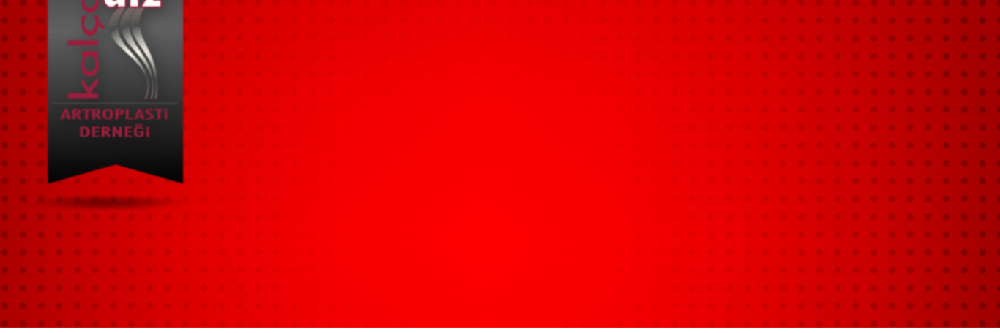

Değerli Meslektaşlarımız,
Kayıtlar tamamlanmıştır. ilginize teşekkür ederiz.
İstanbul
13 Ocak Pazartesi. Acıbadem Ataşehir Hastanesi. Prof. Dr. İbrahim Tuncay, Prof. Dr. Turhan Özler , Prof. Dr. Burak Akan
14 Ocak Salı Bezmialem Vakıf Üniversitesi Hastanesi. Prof. Dr. Fatih Yıldız, Uzm. Dr. Ahmet Can Erdem
15 Ocak Çarşamba Acıbadem Maslak Hastanesi. Prof. Dr. Remzi Tözün, Prof. Dr. Vahit Emre Özden
16 Ocak Persembe İstanbul Üniversitesi İstanbul Tıp Fakültesi (Çapa). Prof. Dr. Cengiz Şen
17 Ocak Cuma Bursa Medikabil Hastanesi. Prof. Dr. Ömer Faruk Bilgen, Prof. Dr. Alpaslan Öztürk
Ankara
13 Ocak Pazartesi Ankara Tip İbni Sina Hastanesi. Prof. Dr. Bülent Erdemli , Doç. Dr. Hakan Kocaoğlu
14 Ocak Salı Hacettepe Üniversitesi Hastanesi. Prof. Dr. Mazhar Tokgözoğlu , Prof. Dr.Bülent Atilla, Prof. Dr. Ömür Çağlar
15 Ocak Çarşamba Bilkent Şehir Hastanesi .Prof. Dr. Bülent Özkurt, Doç. Dr. Ersin Çelen, Doç. Dr. Olgun Bingöl
16 Ocak Perşembe Ufuk Üniversitesi Hastanesi. Prof. Dr. İlker Çetin , Prof. Dr. Berk Güçlü , Prof. Dr. Kerem Başarır, Doç. Dr. Doğaç Karagüven
17 Ocak Cuma Adana Acıbadem Ortopedia Hastanesi. Prof. Dr.Emre Toğrul , Prof. Dr. Yaman Sarpel , Doç. Dr. Çağrı Örs, Uzm. Dr. Remzi Çaylak
KADAD Yönetim Kurulu Adına,
Prof. Dr. Emre Toğrul
